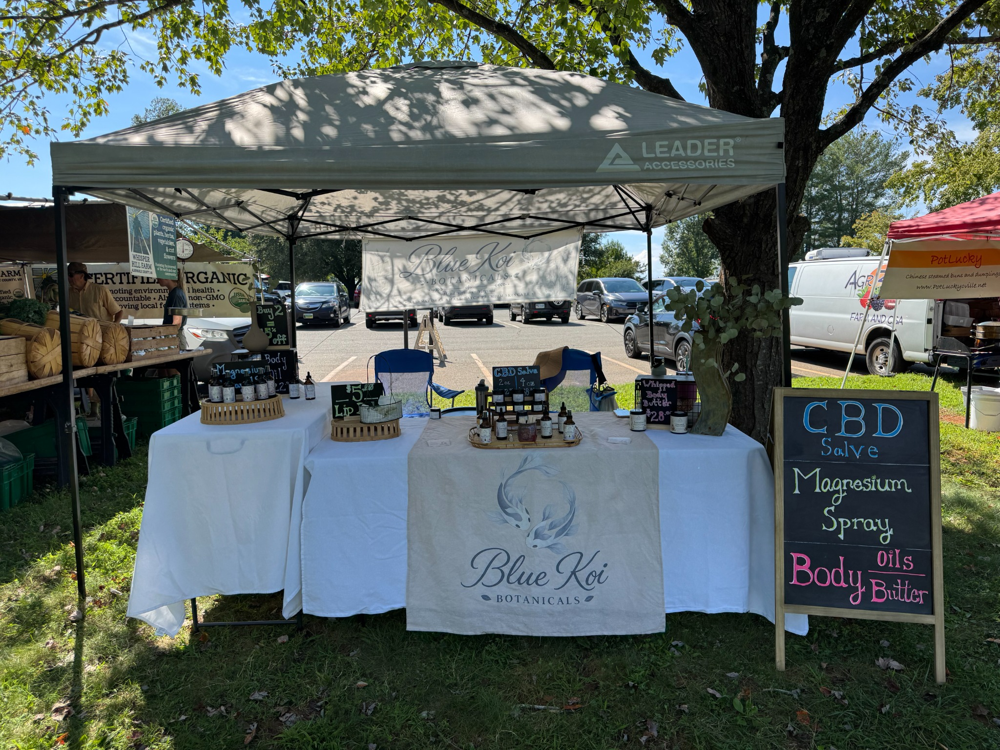

Market visit
Farmers Market at IX Art Park
522 2nd St SE, Charlottesville, VA 22902
Our 2026 dates: , , ,
09:00–13:00 Eastern Time
Meet Blue Koi locally
Looking for CBD salve or a CBD roll-on in Charlottesville, Virginia? Blue Koi Botanicals makes small-batch topical body care in Virginia. Shop our online collection or visit our table at a scheduled Charlottesville market.
Two ways to apply
Plan your visit
The dates below are our scheduled appearances, not permanent shop hours. Check the calendar before visiting and email us to confirm a particular product is available.
Market visit
522 2nd St SE, Charlottesville, VA 22902
Our 2026 dates: , , ,
09:00–13:00 Eastern Time
Market visit
100 E Water Street, Charlottesville, VA 22902
Our 2026 dates: , , ,
09:00–13:00 Eastern Time
Market venues and dates can change. Venue links provide location information; our attendance is shown in our calendar.
All times are local to Charlottesville (Eastern Time).
| Sun | Mon | Tue | Wed | Thu | Fri | Sat |
|---|---|---|---|---|---|---|
| Farmers Market at IX Art Park, 09:00–13:00 | ||||||
| Farmers Market at IX Art Park, 09:00–13:00 | ||||||
| Farmers Market at IX Art Park, 09:00–13:00 |
IXHolidayAway
| Sun | Mon | Tue | Wed | Thu | Fri | Sat |
|---|---|---|---|---|---|---|
| Not attending | ||||||
| Not attending | ||||||
| Farmers Market at IX Art Park, 09:00–13:00 | ||||||
| Charlottesville Holiday Market, 09:00–13:00 | ||||||
IXHolidayAway
| Sun | Mon | Tue | Wed | Thu | Fri | Sat |
|---|---|---|---|---|---|---|
| Charlottesville Holiday Market, 09:00–13:00 | ||||||
| Charlottesville Holiday Market, 09:00–13:00 | ||||||
| Charlottesville Holiday Market, 09:00–13:00 | ||||||
IXHolidayAway
We won’t be at the market November 7 or 14. Our last scheduled market of 2026 is December 19.

Across Virginia
Order our CBD salves or roll-on online for delivery in Virginia. Compare sizes, read the ingredients, and choose the format you prefer. Orders process in 1–3 days before carrier transit.
Questions about texture or ingredients? Meet Gwyn, our owner and maker, or get in touch.
Find Blue Koi Botanicals at the Charlottesville markets listed on this page on our scheduled dates, or order from our online shop. Email us before visiting if you want a particular size or product; market stock can vary.
Our CBD Roll-On is part of the Blue Koi collection. Contact us to confirm market availability before your visit, or check the roll-on product page for online availability.
These are the venues where we attend markets on the listed dates. Please use the schedule to plan your visit; the addresses are not a permanent Blue Koi retail store.
Yes. Order online for delivery in Virginia. Orders normally process in 1–3 days before shipping. Shipping options and rates appear at checkout; see our shipping policy.